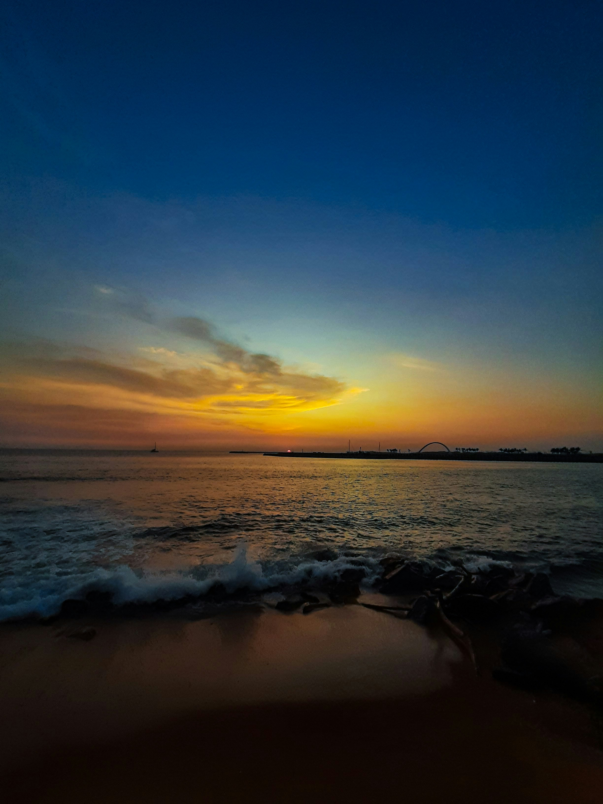
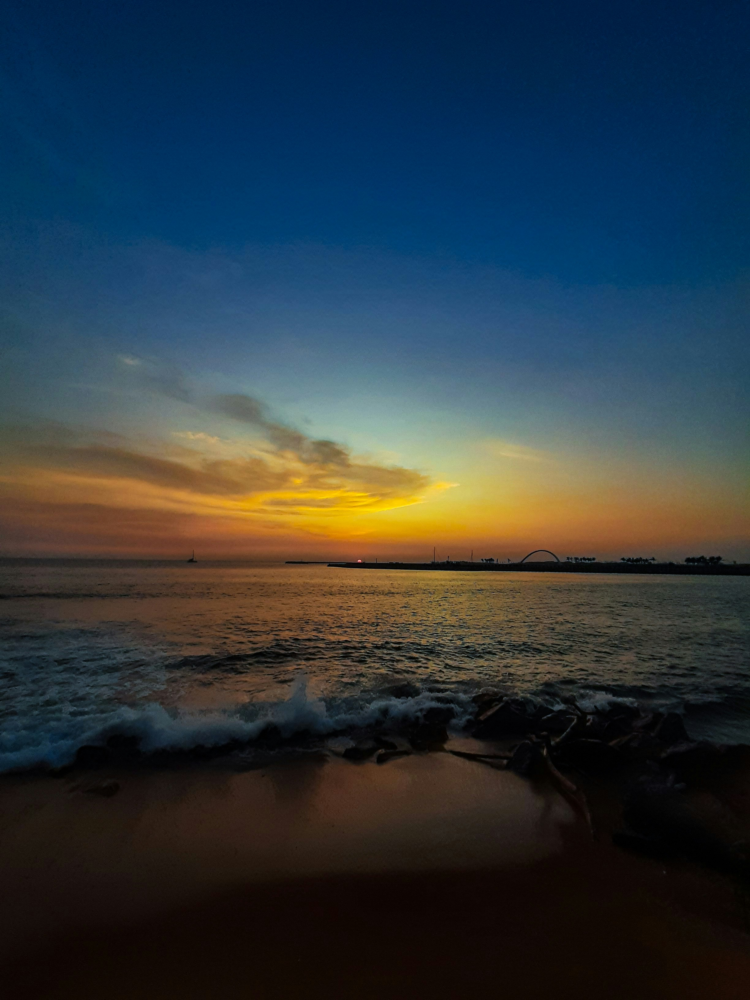
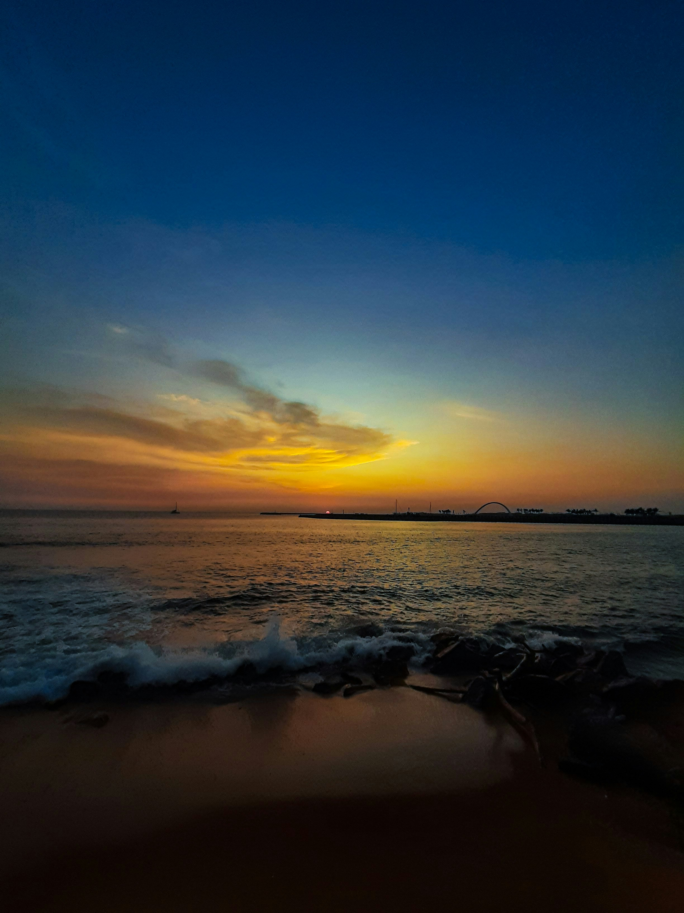
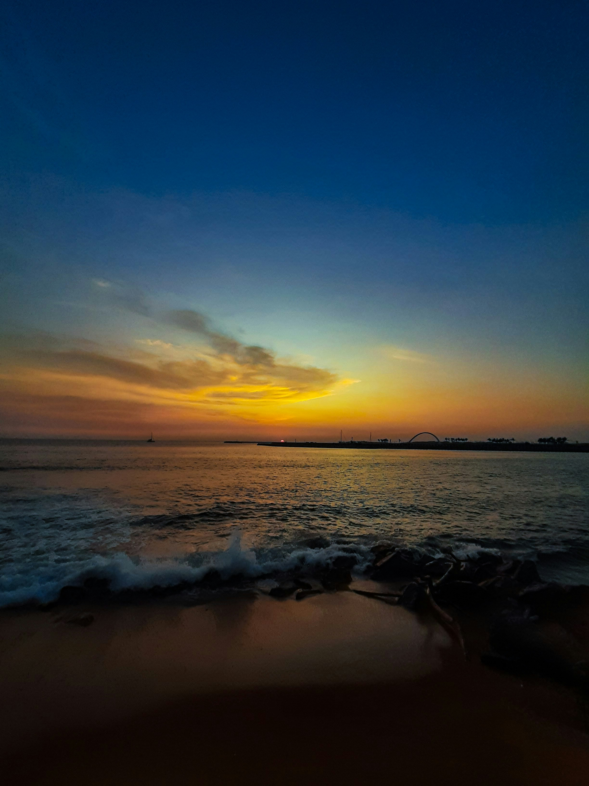

Sri Lanka, historically known as Ceylon, and officially the Democratic Socialist Republic of Sri Lanka, is an island country in South Asia. It lies in the Indian Ocean, southwest of the Bay of Bengal, separated from the Indian peninsula by the Gulf of Mannar and the Palk Strait. Sri Lanka is a tropical country with diverse landscapes ranging from rainforest and arid plains to highlands and sandy beaches. It is known for its ancient Buddhist ruins, including the 5th-century citadel Sigiriya, with its palace and frescoes. The city of Anuradhapura, Sri Lanka's ancient capital, has many ruins dating back more than 2,000 years. Read More
| Year | 2020 | 2021 | 2022 | 2023(Jan-May) |
|---|---|---|---|---|
| Total | 507,704 | 194,495 | 719,978 | 524,486 |
| Form UK | 55,455 | 16,646 | 85,187 | 42,841 |
| Form Ireland | 2,294 | 559 | 3,056 | 531 |
Source : Sri Lanka High Commission in the UK